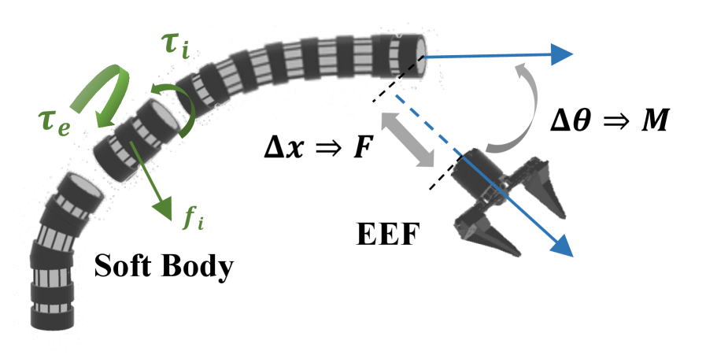
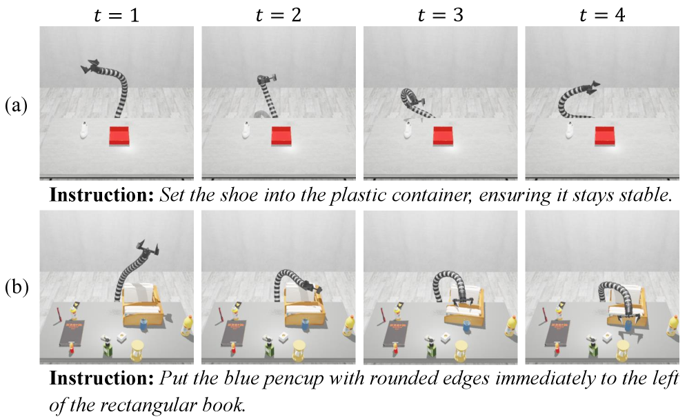
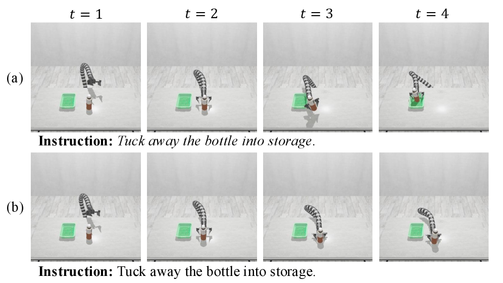

ManiSoft introduces the first benchmark for vision-language manipulation with soft continuum robots, revealing that existing VLA models fail under randomization primarily due to inaccurate visual proprioception estimation and limited use of deformability for obstacle avoidance.
本文提出了首个面向软连续体机器人的视觉语言操控基准（ManiSoft），针对该领域特有的不可靠本体感知与分布式驱动挑战，构建了耦合软体动力学与接触丰富交互的仿真环境。通过包含6300个多样化场景和分层规划器+低层RL专家轨迹的四类任务，揭示了现有VLA模型在随机化条件下性能大幅下降的根本原因。
Deep Note — manisoft
Key Takeaways - First benchmark for vision-language manipulation with soft continuum robots, addressing challenges of unreliable proprioception and distributed actuation. - Provides a tailored simulator coupling soft-body dynamics with contact-rich interactions via elastic force constraints. - Includes 6300 diverse scenes with expert trajectories generated by a hierarchical planner and low-level RL policy. - Four tasks highlight distinct deformable control aspects: end-effector coordination, obstacle avoidance, etc. - Existing VLA models perform well in clean scenes but see substantial drops under randomization due to poor visual proprioception and limited deformability exploitation.
0) Metadata
- Title: ManiSoft: Towards Vision-Language Manipulation for Soft Continuum Robotics
- Alias: manisoft
- Authors: Ziyu Wei, Luting Wang, Chen Gao, Li Wen, Si Liu
- arXiv ID: 2605.18617
- Published:
- Links:
- Abs: https://arxiv.org/abs/2605.18617
- HTML: https://arxiv.org/html/2605.18617v1
- PDF: https://arxiv.org/pdf/2605.18617
- Tags: soft-robotics, vision-language-manipulation, benchmark, continuum-robots, embodied-ai
- Domains: system_safety
- Rating: 3/5 (base 1 + quality 1 + observation 1)
1) Why-read
ManiSoft introduces the first benchmark for vision-language manipulation with soft continuum robots, revealing that existing VLA models fail under randomization primarily due to inaccurate visual proprioception estimation and limited use of deformability for obstacle avoidance.
2) CRGP
C — Context
Most vision-language manipulation research focuses on rigid arms with accurate proprioception and low-dimensional kinematics; soft arms offer deformability for cluttered spaces but suffer from unreliable state estimation and high-dimensional actuation. Existing simulators separately model soft-body dynamics or rigid-body interactions, but not both, limiting the study of contact-rich soft manipulation.
R — Related work
- Rigid-arm benchmarks: RLBench, ManiSkill, CALVIN, LIBERO, RoboVerse, RoboTwin.
- VLA models: RT-1/2, OpenVLA, CogACT, DexVLA, π-series.
- Soft arm control: Thuruthel et al. (trajectory optimization, model-based RL), Centurelli et al. (LSTM+TPRO), Soft DAgger (imitation learning).
G — Gap
No existing benchmark addresses vision-language manipulation for soft continuum robots, which present unique challenges from unreliable proprioception and distributed low-level actuation. Prior rigid-arm benchmarks assume accurate state estimation and simple kinematics, leaving deformable control underexplored in the context of language-conditioned tasks.
P — Proposal
ManiSoft integrates a soft-body dynamics simulator with a rigid-body interaction simulator via elastic force constraints, enabling realistic contact-rich soft manipulation. It defines four tasks with 6300 procedurally generated scenes and expert trajectories produced by a hierarchical planner (high-level waypoints) followed by a low-level RL torque controller.
---
4) Experiments
Main results
Benchmarking three representative policy models (ACT, Diffusion Policy, etc.), success rates drop from approximately 60–70% in clean scenes to below 20% under scene randomization (object placements, textures, obstacles). Failures mainly stem from inaccurate visual estimation of the soft arm's pose and lack of deformability-aware planning.
Ablation
Not explicitly reported; the hierarchical generation pipeline (planner + RL) is integral to producing stable trajectories, but no quantitative ablation is available in the provided text.
Limitations
['The simulator does not model material fatigue or long-term wear of soft bodies.', 'Tasks are limited to tabletop settings; generalization to 3D confined spaces or dynamic environments is not evaluated.', 'Expert trajectories rely on a handcrafted high-level planner, which may limit diversity and scalability for more complex tasks.']
5) Why it matters
- Highlights the need for new perception methods that estimate soft arm states directly from vision, as traditional joint encoders are missing.
- Shows that VLA models must incorporate deformability into action planning to exploit soft robot advantages in clutter.
- Provides a standardized testbed for studying embodiment-aware vision-language-action models beyond rigid robots.
- The automated data pipeline enables scalable generation of expert demonstrations for offline learning and sim-to-real transfer.
6) Next steps
- [ ] Develop VLA models that output low-level torque commands directly instead of waypoints to better handle soft arm dynamics.
- [ ] Integrate learned visual proprioception modules that predict the soft arm's 3D shape from camera images.
- [ ] Extend ManiSoft with real-world soft arm datasets and sim-to-real domain randomization techniques.
- [ ] Investigate deformability-aware reinforcement learning objectives that reward adaptive obstacle negotiation.
7) Scoring
3/5 = base 1 + quality 1 + observation 1
ManiSoft：面向软连续体机器人的视觉语言操控
主要结论 - 首个面向软连续体机器人的视觉语言操控基准，解决不可靠本体感知与分布式驱动的独特挑战。 - 通过弹性力约束耦合软体动力学与刚体交互，提供定制的接触丰富软体操控仿真器。 - 包含6300个多样化场景，专家轨迹由分层规划器与低层RL策略生成。 - 四类任务突出不同变形控制方面：末端执行器协调、障碍物规避等。 - 现有VLA模型在干净场景中表现良好，但在随机化条件下因视觉本体感知不准确和可变形性利用不足而性能大幅下降。
1) 阅读理由
ManiSoft首次提出软连续体机器人的视觉语言操控基准，揭示了现有VLA模型在随机化条件下失败的主要原因是视觉本体感知估计不准确以及未能充分利用可变形性进行避障。
2) CRGP（背景 / 相关工作 / 差距 / 方案）
背景： 大多数视觉语言操控研究聚焦于具有精确本体感知和低维运动学的刚性机械臂；软臂在杂乱空间中具有可变形性，但面临状态估计不可靠和高维驱动的问题。现有仿真器分别建模软体动力学或刚体交互，但未将两者结合，限制了接触丰富软体操控的研究。 相关工作： 刚性机械臂基准：RLBench、ManiSkill、CALVIN、LIBERO、RoboVerse、RoboTwin。VLA模型：RT-1/2、OpenVLA、CogACT、DexVLA、π系列。软臂控制：Thuruthel等人（轨迹优化、基于模型的RL）、Centurelli等人（LSTM+TPRO）、Soft DAgger（模仿学习）。 差距： 现有基准未能涵盖软连续体机器人的视觉语言操控，该领域因不可靠本体感知和分布式低层驱动而面临独特挑战。先前的刚性机械臂基准假设精确状态估计和简单运动学，使得语言条件任务中的可变形控制尚未充分探索。 方案： ManiSoft通过弹性力约束将软体动力学仿真器与刚体交互仿真器集成，实现逼真的接触丰富软体操控。它定义了四类任务，包含6300个程序化生成的场景，以及由高层规划器（设定关键路点）后接低层RL扭矩控制器生成的专家轨迹。
3) 实验
对三种代表性策略模型（ACT、Diffusion Policy等）进行基准测试，结果显示在干净场景中成功率约为60-70%，而在场景随机化（物体位置、纹理、障碍物）下成功率骤降至20%以下。失败主要源于对软臂姿态的视觉估计不准确以及缺乏可变形性感知的规划。
消融实验
未明确报告消融实验；分层生成管线（规划器+RL）对于产生稳定轨迹至关重要，但所提供的文本中没有定量消融数据。
局限性
仿真器未模拟软体的材料疲劳或长期磨损；任务局限于桌面场景，未评估在三维密闭空间或动态环境中的泛化能力；专家轨迹依赖手工设计的高层规划器，可能限制更复杂任务的多样性和可扩展性。
4) 重要性
- 突出了需要新的感知方法，直接从视觉估计软臂状态，因为传统关节编码器缺失。
- 表明VLA模型必须将可变形性纳入动作规划，以在杂乱环境中发挥软机器人优势。
- 为研究超越刚性机器人的具身感知语言动作模型提供了标准化测试平台。
- 自动数据管线可实现专家演示的可扩展生成，支持离线学习和仿真到现实迁移。
5) 下一步
- [ ] 开发直接输出低层扭矩指令而非路点的VLA模型，以更好适应软臂动力学。
- [ ] 集成学习型视觉本体感知模块，从相机图像预测软臂的三维形状。
- [ ] 扩展ManiSoft，加入真实软臂数据集及仿真到现实的域随机化技术。
- [ ] 研究可变形性感知的强化学习目标，奖励自适应的障碍协商行为。

![Figure 4 : Trajectory generation pipeline in ManiSoft . (a) An executor is trained via RL policy to transform waypoint (6-DoF pose) into torques.
(b) RL rewards are designed to balance accuracy and stability, consisting of a pose difference reward R d R_{d} negatively correlated with the pose difference, and a stability reward R s R_{s} that penalizes or rewards changes in pose difference.
(c) Task-specific rules are predefined to produce high-level planning (trajectory waypoints) for each case, which are then converted into low-level actions (torque commands) by the executor to generate complete trajectories.](figures/1101/fig_003.png)
![Figure 5 : Statistical analysis of the ManiSoft Benchmark. (a) Distribution of trajectory lengths. Tasks in ManiSoft generally involve long trajectories, with the STK task exhibiting notably longer trajectories than the others.
(b) Frequency distribution of target object categories, highlighting the diversity of manipulable objects in ManiSoft .
(c) Spatial distribution of initial target object positions on the tabletop, showing that graspable targets are broadly and evenly distributed across the workspace.](figures/1101/fig_004.png)

